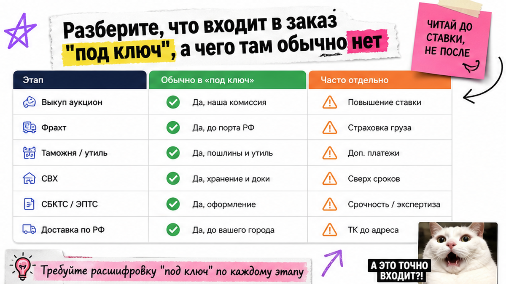
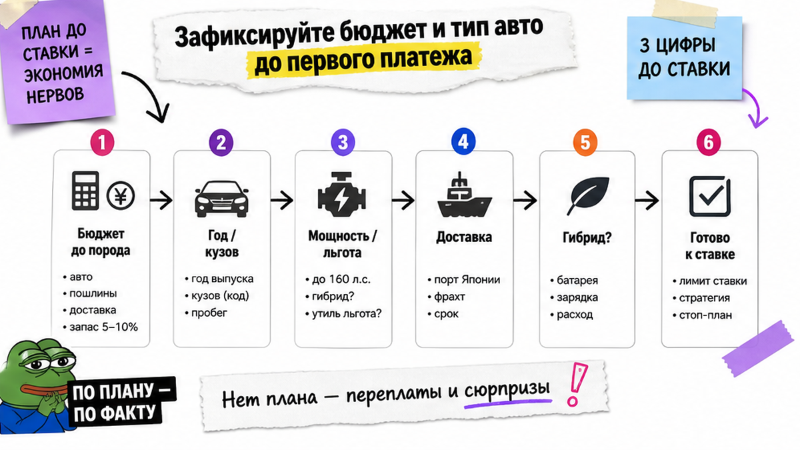
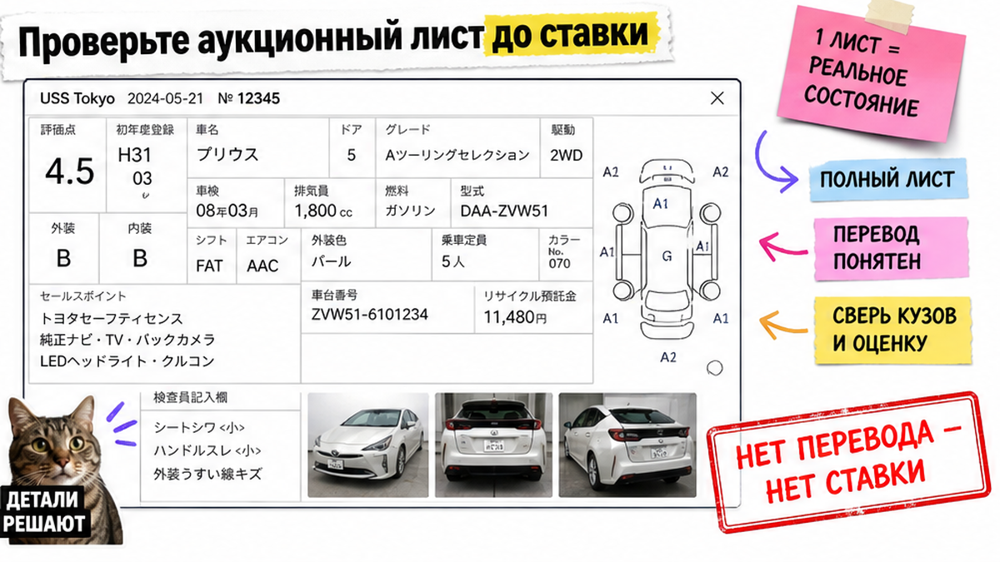

Семья из Новосибирска внесла депозит за "Toyota под ключ" без письменной сметы и перевода аукционного листа – а через неделю выяснилось, что СВХ, СБКТС и доставка по РФ в цену не входили. Главная боль новичка: "под ключ" оказывается дырявой сметой, и ошибка дорого стоит до прибытия. Ниже – маршрут Авто-Сейлс от бюджета до выдачи. После гайда вы соберёте чек-лист первого заказа и зададите компании 7 вопросов до оплаты.
TL;DR / Быстрый инсайт: Частник сам на японский аукцион не заходит – нужен лицензированный доступ компании. Цена лота ≠ бюджет под ключ: лот, логистика, таможня, утильсбор, СВХ, СБКТС/ЭПТС и доставка по РФ. До ставки зафиксируйте возраст, объём/мощность и полный бюджет до вашего города. Нет письменной сметы и понятного перевода листа – нет депозита.
В 2026 году новичков чаще шокирует не "морская доставка". На площадки вроде USS или TAA частник с улицы не попадёт. А разница между льготным и коммерческим утильсбором по мощности может перевернуть смету сильнее, чем соседний лот. Бесплатные сутки на СВХ во Владивостоке часто всего 5–10 дней – дальше простой дорожает ступенями.
Мы в Авто-Сейлс во Владивостоке проводим первого заказчика за руку: от сметы до выдачи, без страшилок и без выдуманных лотов. Форм на странице нет – расчёт и подбор живут в каталоге и в переписке.

На пальцах: "под ключ" – список этапов до машины у вас в городе, а не красивая фраза в объявлении. Если в договоре только "выкуп лота", растаможка и доставка могут оказаться снаружи. Типичная ошибка – верить заголовку и не спросить про каждую статью сметы.
| Этап | Что это простыми словами | Обычно в "под ключ" |
|---|---|---|
| Выкуп на аукционе | Компания ставит ставку и покупает лот | Да |
| Логистика + фрахт | Доставка до порта Японии и морской переход | Да |
| Таможня и утильсбор | Платежи при ввозе; утильсбор – взнос за утилизацию авто позже | Должно быть явно |
| СВХ | Склад временного хранения у порта, пока идут документы | Часто отдельно / лимит суток |
| СБКТС и ЭПТС | Свидетельство безопасности и электронный ПТС – без них на учёт не поставить | Должно быть явно |
| Доставка по РФ | Автовоз, ж/д или самовывоз во Владивостоке | Часто выносят за скобки |
Сделайте так: выпишите каждый этап и отметьте "входит / не входит / лимит". Не делайте так: платить по фразе "всё включено" без таблицы статей. Избегайте устных обещаний без сметы.
Схема заказа под ключ:
Бюджет до города → Перевод аукционного листа → Ставка → Выкуп → Порт Японии → Владивосток (СВХ + таможня) → СБКТС/ЭПТС → Выдача или автовоз

Не начинайте с первого красивого лота. Начните с цифры "до ключей в моём городе" и параметров машины. На практике это спасает от лота, который "влезает" только до Владивостока.
Сделайте так: держите три цифры до ставки – возраст, объём/мощность, бюджет до города. Не делайте так: гнаться за лотом дешевле соседа, если мощность выбивает из льготного утильсбора. Готовые суммы пошлин не публикуем – расчёт запросите в каталоге Авто-Сейлс.

Аукционный лист – "паспорт состояния" с японского аукциона: оценка, пробег, повреждения. Его можно подделать или показать кусками. Правило новичка: нет понятного перевода и сверки номера кузова – нет ставки.
Например, отказ от мутного лота – нормальная часть работы. Глубже – в разборе как читать аукционный лист. Про возраст – материал про проходные авто из Японии.
Сделайте так: просите перевод листа до депозита и до ставки. Не делайте так: соглашаться на "потом пришлём, сейчас надо успеть". Проверьте номер кузова сами.
Депозит – уже ваши деньги. В реальном проекте споры чаще из-за размытых условий отказа и подтверждения цены выкупа, а не из-за моря.
В договоре до оплаты должны быть: состав сметы, момент ставки, право отказа до ставки, подтверждение выкупа, кто закрывает таможню/СВХ/СБКТС/ЭПТС/доставку. Платите по договору, не "просто по переписке".
Сделайте так: сохраняйте смету и ответы в одном чате. Не делайте так: вносить депозит "чтобы закрепить очередь" без письменных условий. Детали заказа – в Telegram @avtosales125.
Владивосток – хаб логистики. После моря машину ставят на СВХ, параллельно идут таможня и документы, затем СБКТС и ЭПТС. Без этой связки авто не поставить на учёт.
Маршрут во Владивостоке:
Порт → СВХ → Таможня → СБКТС → ЭПТС → Выдача или автовоз
Тут важный момент: бесплатный период на СВХ часто 5–10 суток, потом простой дорожает ступенями. Спрашивайте не только про ролкер, но и кто следит за сроками на складе. Подробнее – в гиде про СВХ во Владивостоке.
Ехать лично обычно не нужно. Приезд имеет смысл для осмотра на выдаче (офис: Днепровская 40а, стр. 4).
Сделайте так: запросите план "прибытие → снятие с СВХ → документы → отправка". Не делайте так: считать, что после оплаты лота осталось "просто подождать пароход". Используйте план как ориентир сроков.
Приёмка – последний фильтр до ключей. Даже без поездки попросите фото/видео и сверку документов до отправки.
Сделайте так: принимайте авто по чеклисту. Не делайте так: откладывать вопросы по документам "на потом".
Понятный результат на сегодня – пройти список и отметить галочки. Так вы сможете задать вопросы до оплаты и собрать пакет до депозита, а не идти в лотерею.
Что изменится после этих шагов: вы называете этапы "под ключ", держите три цифры до ставки (возраст, объём/мощность, бюджет до города) и не вносите депозит без письменной сметы и перевода аукционного листа.
Следующий шаг для Японии: откройте каталог avto-sales125.ru, опишите бюджет и параметры – менеджер соберёт расчёт без форм на этой странице.
Материал проверен: Редакция Авто-Сейлс – эксперты по авто под заказ из Японии, Кореи и Китая (Владивосток).
Достоверность: факты сверены с открытыми источниками на 2026-09-30 (гайды по заказу и растаможке 2026, обзор ПП РФ №1713 / рамка утильсбора, практика СВХ во Владивостоке, проверка аукционного листа) и с практикой сопровождения заказов Авто-Сейлс; актуальные расчёты по лоту – только в каталоге.
Заказ "с аукциона" часто значит только выкуп лота. "Под ключ" должно включать путь до выдачи: логистику, таможню, документы и доставку или самовывоз. Попросите таблицу этапов и отметьте, что уже в цене.
Обычно нет. Если компания закрывает таможню, СВХ и отправку, примите авто в своём городе. Ехать имеет смысл для личного осмотра на выдаче. Зафиксируйте формат приёмки в договоре.
Спросите состав сметы, отказ до ставки, подтверждение цены выкупа, кто ведёт таможню, бесплатные сутки на СВХ и доставку. Без ответов на эти семь пунктов депозит не переводите.
К цене лота добавляются комиссии, логистика, таможня, утильсбор, СВХ, СБКТС/ЭПТС и доставка по РФ. Считайте бюджет до ключей в городе. Точные цифры по лоту запрашивайте в каталоге.
Возрастные границы около 3 и 5 лет влияют на пошлину. До ставки сверьте дату выпуска с правилами "проходности". Если год "на грани" – пересчитайте смету до ставки.
Да, если условия размыты. До оплаты зафиксируйте: когда депозит списывается, что будет при проигрыше ставки и можно ли отказаться после перевода листа. Платите только по договору с этими пунктами.